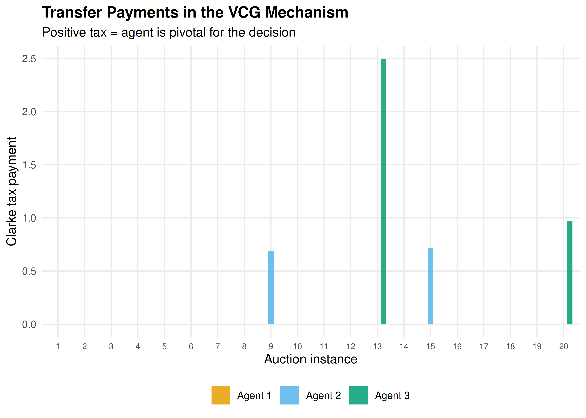

33 Mechanism Design
Inverse game theory: the revelation principle, incentive compatibility, the VCG mechanism, and implementation in R for public goods provision.
Learning objectives
- Explain mechanism design as the “inverse” problem of game theory: designing rules to achieve desired outcomes.
- State the revelation principle and its role in simplifying mechanism design.
- Define incentive compatibility and individual rationality.
- Implement the VCG mechanism for a public goods provision problem in R.
33.1 Motivation
In standard game theory, we take the rules of the game as given and predict outcomes. Mechanism design flips this: given a desired outcome, what rules should we impose? This “reverse engineering” perspective is central to real-world institutional design — from spectrum auctions and organ allocation systems to voting rules and matching markets.
Consider a city council deciding whether to build a public park. Each citizen has a private valuation for the park, which they may misrepresent if doing so serves their interest. Can we design a mechanism — a set of rules for eliciting preferences and making decisions — that induces truthful reporting and achieves the socially optimal outcome? The Vickrey-Clarke-Groves (VCG) mechanism shows that the answer is yes, under certain conditions (Nisan et al., 2007, Chapter 9).
33.2 Theory
33.2.1 The mechanism design problem
A mechanism specifies (i) a message space for each agent and (ii) an outcome function mapping messages to decisions and transfers. A mechanism implements a social choice function if, in equilibrium, the mechanism’s outcome matches what the social choice function prescribes.
33.2.2 The revelation principle
Theorem: Revelation Principle
For any mechanism in which agents play a Bayesian Nash equilibrium, there exists a direct mechanism — one where agents simply report their types — that achieves the same outcome and where truthful reporting is an equilibrium.
The revelation principle dramatically simplifies the designer’s problem: instead of searching over all possible mechanisms, we can restrict attention to direct, truthful mechanisms without loss of generality.
33.2.3 Incentive compatibility and individual rationality
A mechanism is incentive compatible (IC) if truthful reporting is an equilibrium strategy for every agent. It is individually rational (IR) if every agent’s expected payoff from participating is at least as large as their outside option (typically zero).
These two constraints define the boundary of what is achievable. A mechanism that violates IC will produce distorted reports; one that violates IR will see agents opt out.
33.2.4 The VCG mechanism
The Vickrey-Clarke-Groves mechanism works as follows for a public decision:
- Each agent \(i\) reports a valuation \(\hat{v}_i\) for each possible outcome.
- The mechanism chooses the outcome \(k^*\) that maximizes total reported welfare: \(k^* = \arg\max_k \sum_i \hat{v}_i(k)\).
- Each agent pays a Clarke tax: the externality they impose on others.
\[\begin{equation} t_i = \max_k \sum_{j \neq i} \hat{v}_j(k) - \sum_{j \neq i} \hat{v}_j(k^*) \tag{33.1} \end{equation}\]
The Clarke tax equals the difference between what the other agents could have achieved (without \(i\)) and what they do achieve (with \(i\)’s presence influencing the decision). Under VCG, truthful reporting is a dominant strategy (Nisan et al., 2007, Chapter 9).
33.3 Implementation in R
33.3.1 VCG mechanism for public goods
vcg_mechanism <- function(valuations) {
# valuations: matrix where rows = agents, cols = outcomes
# Returns: chosen outcome, transfers, and payoffs
n_agents <- nrow(valuations)
n_outcomes <- ncol(valuations)
# Social welfare for each outcome
social_welfare <- colSums(valuations)
chosen <- which.max(social_welfare)
# Clarke tax for each agent
transfers <- numeric(n_agents)
for (i in seq_len(n_agents)) {
# Best outcome for others without agent i's influence
welfare_without_i <- colSums(valuations[-i, , drop = FALSE])
best_without_i <- max(welfare_without_i)
# What others get under the chosen outcome
others_at_chosen <- sum(valuations[-i, chosen])
transfers[i] <- best_without_i - others_at_chosen
}
# Agent payoff = valuation of chosen outcome - tax
payoffs <- valuations[, chosen] - transfers
list(
chosen_outcome = chosen,
social_welfare = social_welfare[chosen],
transfers = transfers,
payoffs = payoffs,
is_truthful_dominant = TRUE # by VCG theory
)
}
# Majority voting mechanism (for comparison)
majority_voting <- function(valuations) {
n_agents <- nrow(valuations)
n_outcomes <- ncol(valuations)
# Each agent votes for their most-preferred outcome
votes <- apply(valuations, 1, which.max)
vote_counts <- tabulate(votes, nbins = n_outcomes)
chosen <- which.max(vote_counts)
list(
chosen_outcome = chosen,
social_welfare = sum(valuations[, chosen]),
transfers = rep(0, n_agents),
payoffs = valuations[, chosen]
)
}33.3.2 Comparing mechanisms across many instances
set.seed(42)
n_simulations <- 500
n_agents <- 3
n_outcomes <- 2 # Build park (1) vs. don't build (2)
results <- map_dfr(seq_len(n_simulations), function(sim_id) {
# Random valuations: agents value "build" differently, "don't build" = 0
v_build <- runif(n_agents, min = -2, max = 5)
valuations <- cbind(v_build, rep(0, n_agents))
vcg_result <- vcg_mechanism(valuations)
mv_result <- majority_voting(valuations)
# Optimal social welfare (first-best)
optimal_welfare <- max(colSums(valuations))
tibble(
sim_id = sim_id,
mechanism = c("VCG", "Majority voting", "First-best"),
welfare = c(vcg_result$social_welfare,
mv_result$social_welfare,
optimal_welfare)
)
})33.3.4 Figure 2: VCG transfer payments by agent
set.seed(42)
n_sample <- 20
transfer_data <- map_dfr(seq_len(n_sample), function(sim_id) {
v_build <- runif(n_agents, min = -2, max = 5)
valuations <- cbind(v_build, rep(0, n_agents))
vcg_result <- vcg_mechanism(valuations)
tibble(
instance = factor(sim_id),
agent = paste("Agent", seq_len(n_agents)),
transfer = vcg_result$transfers,
valuation = v_build
)
})
p_transfers <- ggplot(transfer_data,
aes(x = instance, y = transfer, fill = agent)) +
geom_col(position = position_dodge(width = 0.7), width = 0.6, alpha = 0.85) +
scale_fill_manual(values = okabe_ito[1:3], name = NULL) +
scale_y_continuous(name = "Clarke tax payment") +
labs(x = "Auction instance",
title = "Transfer Payments in the VCG Mechanism",
subtitle = "Positive tax = agent is pivotal for the decision") +
theme_publication() +
theme(axis.text.x = element_text(size = 7))
p_transfers
Figure 33.2: Clarke tax payments in the VCG mechanism for a representative sample of 20 instances. Agents who are pivotal — those whose presence changes the chosen outcome — pay a positive tax.
save_pub_fig(p_transfers, "vcg-transfers", width = 7, height = 5)33.4 Worked example
Three citizens have private valuations for building a public park. The alternative is the status quo (no park, value 0 for all). We apply the VCG mechanism and compare it to majority voting.
# Agent valuations for: (Build park, No park)
# Agent 1 loves parks, Agent 2 is mildly positive, Agent 3 prefers no park
valuations <- matrix(c(
8, 0, # Agent 1: values park at 8
3, 0, # Agent 2: values park at 3
-2, 0 # Agent 3: dislikes park (cost = 2)
), nrow = 3, byrow = TRUE,
dimnames = list(paste("Agent", 1:3), c("Build", "No build")))
cat("Agent valuations:\n")#> Agent valuations:
print(valuations)#> Build No build
#> Agent 1 8 0
#> Agent 2 3 0
#> Agent 3 -2 0#>
#> --- VCG Mechanism ---#> Chosen outcome: Build#> Social welfare: 9.0#>
#> Clarke taxes:
for (i in 1:3) {
cat(sprintf(" Agent %d: tax = %.1f, net payoff = %.1f\n",
i, vcg$transfers[i], vcg$payoffs[i]))
}#> Agent 1: tax = 0.0, net payoff = 8.0
#> Agent 2: tax = 0.0, net payoff = 3.0
#> Agent 3: tax = 0.0, net payoff = -2.0#>
#> --- Majority Voting ---#> Chosen outcome: Build#> Social welfare: 9.0
# Verify incentive compatibility: what if Agent 3 lies?
cat("\n--- Incentive Compatibility Check ---\n")#>
#> --- Incentive Compatibility Check ---
cat("What if Agent 3 reports valuation -10 instead of -2?\n")#> What if Agent 3 reports valuation -10 instead of -2?
valuations_lie <- valuations
valuations_lie[3, 1] <- -10
vcg_lie <- vcg_mechanism(valuations_lie)
cat(sprintf("Outcome with lie: %s\n",
colnames(valuations)[vcg_lie$chosen_outcome]))#> Outcome with lie: Build
cat(sprintf("Agent 3's true payoff under lie: %.1f\n",
valuations[3, vcg_lie$chosen_outcome] - vcg_lie$transfers[3]))#> Agent 3's true payoff under lie: -2.0#> Agent 3's true payoff under truth: -2.0
cat("Lying is not profitable -- VCG is incentive compatible.\n")#> Lying is not profitable -- VCG is incentive compatible.The VCG mechanism chooses to build the park (total value \(8 + 3 - 2 = 9 > 0\)). Agent 3, who opposes the park, pays no Clarke tax because removing Agent 3 would not change the outcome — the other agents still prefer building. Majority voting also selects “Build” (2–1 vote), but this is coincidental; majority voting can fail when a minority has intense preferences that outweigh the mild preferences of the majority.
33.5 Extensions
- Myerson’s optimal auction (32) derives the revenue-maximizing mechanism by applying mechanism design to auction settings, introducing virtual valuations and reserve prices.
- Budget balance — the VCG mechanism generally runs a deficit (total taxes do not cover costs). The AGV (Arrow–d’Aspremont–Gerard-Varet) mechanism achieves budget balance but only satisfies IC in a Bayesian sense.
- Combinatorial auctions extend VCG to settings with multiple items and complementarities, though computational complexity becomes a major concern.
- For the foundational treatment, see Nisan et al. (2007) (Chapters 9–12) and Roth (2002) on practical market design.
Exercises
Pivotal agents. In the worked example, modify Agent 2’s valuation for the park to \(1\) (so total value of building becomes \(8 + 1 - 2 = 7\)). Recompute the VCG outcome and Clarke taxes. Now set Agent 1’s valuation to \(1\) so building yields \(1 + 1 - 2 = 0\). What happens? Which agents are pivotal, and how do their taxes change?
Budget balance. Run 500 simulations of the VCG mechanism with 5 agents and a binary public goods decision (\(v_i \sim \text{Uniform}(-2, 5)\)). Compute the total Clarke tax revenue in each simulation. What fraction of simulations have positive total tax revenue? Plot the distribution of total taxes and explain why VCG generally does not achieve budget balance.
Manipulation under majority voting. Construct a 3-agent, 3-outcome example where majority voting leads to a Condorcet cycle (no Condorcet winner), while VCG selects a unique efficient outcome. Implement both mechanisms and show that the VCG outcome maximizes social welfare.
Solutions appear in D.